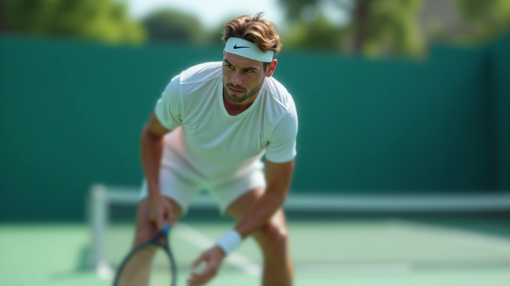
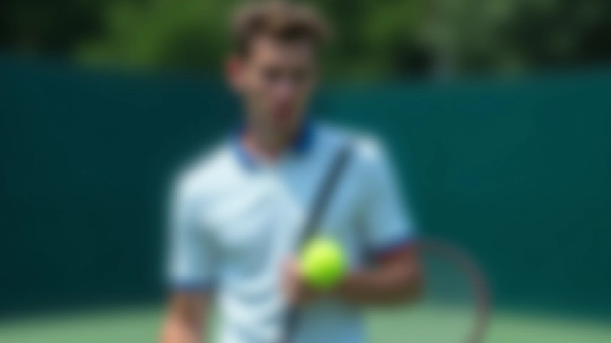

قراءة استراتيجية الخصم وتكييف خطتك
كيف تلاحظ نقاط ضعف الخصم وتعدّل استراتيجيتك بسرعة خلال المباراة. يستغرق التعلم وقتاً لكن النتائج واضحة جداً.


الفرق بين اللاعب الجيد والاستثنائي ليس في قوة الضربة وحسب. إنه في القدرة على رؤية ما يفعله الخصم وتغيير الخطة بسرعة. هذا ما نسميه "قراءة اللعبة" — مهارة يمكن تطويرها بالممارسة والتركيز.
خلال هذا الدليل، سنشرح كيف تتعلم ملاحظة الأنماط، اكتشاف نقاط الضعف، والاستجابة بحكمة. لا توجد صيغة سحرية هنا — فقط أسس صلبة وخطوات عملية تعمل حقاً.
ابدأ بملاحظة الأنماط البسيطة
كل لاعب لديه عادات متكررة. تعلم رؤيتها هو الخطوة الأولى.
لا تبدأ بمحاولة قراءة كل شيء في نفس الوقت. ركز على نمط واحد في كل مباراة. مثلاً: هل يفضل الخصم الضربات الأرضية على الشبكة؟ هل يتحرك بسرعة أكثر إلى جهة اليمين أم اليسار؟
خلال الشوط الأول، لاحظ فقط. اترك الضغط على نفسك. بعد 4-5 نقاط، ستبدأ ترى صورة أوضح. بعض اللاعبين يرتكبون الخطأ ذاته في المواقف المتشابهة — هذا ما تبحث عنه.
نصيحة: احمل دفتراً صغيراً بعد المباراة واكتب الملاحظات. "الخصم يرفع كرات ضعيفة عندما يكون تحت الضغط" أو "يتجنب الشبكة في المجموعة الثانية". هذه الملاحظات قيمة جداً.

اكتشف نقاط الضعف الحقيقية
الفرق بين "نقطة ضعيفة" و"فرصة حقيقية" مهم جداً.
ليست كل نقطة ضعف فرصة لتسجيل نقاط. قد يكون الخصم ضعيفاً في الضربات القادمة من الجهة اليسرى، لكنه قد يكون قوياً جداً عندما يجبر على الاقتراب من الشبكة.
البحث الحقيقي هو عن النقاط التي تؤثر على توازنه النفسي. هل يفقد الثقة بعد خسارة نقطة معينة؟ هل يصبح عدوانياً جداً عندما تلعب دفاعاً قوياً؟ هذه الأنماط النفسية أقوى بكثير من الضعف التقني البحت.
جرب تكتيكاً واحداً في 2-3 نقاط متتالية. إذا نجح، استمر. إذا لم ينجح، انتقل إلى شيء آخر. هذه هي الطريقة الفعلية لاختبار فرضياتك.
عدّل خطتك بسرعة وثقة
التعديل يتطلب جرأة وصبراً معاً.
عندما تقرر تغيير شيء ما، التزم به لمدة 5-10 نقاط على الأقل. الكثير من اللاعبين يتركون الخطة بسرعة جداً عندما لا تنجح فوراً. لا تفعل هذا. أعطِ الخطة وقتاً لتعمل.
مثال حقيقي: إذا قررت أن تلعب كل الكرات من الخط الأساسي وتتجنب الاقتراب من الشبكة (لأن الخصم قوي جداً في الضربات المسقوطة)، فافعل هذا بثقة. لا تتردد أو تتراجع عندما تخسر نقطة أو نقطتين.
الثقة نفسها ستنقل رسالة للخصم. سيشعر أنك تعرف ما تفعله. هذا يزعزع ثقته أكثر.

تكتيكات سهلة التطبيق
هذه ليست نظرية — جرّب كل واحدة في المباراة القادمة:
اختبر الضعف مبكراً
في أول 5 نقاط، أرسل كرات لاختبار جميع أجزاء الملعب. لا تلعب للفوز بعد — العب للتعلم. لاحظ أين يرتاح الخصم وأين يتوتر.
غيّر الإيقاع بانتظام
لا تلعب بنفس السرعة والقوة طول الوقت. مرة بطيء وعميق، ومرة سريع ومسطح. هذا يزعج توازن الخصم ويجعله يفكر كثيراً.
استغل لحظات الإحباط
عندما يفقد الخصم نقطة سهلة، سيكون في حالة ذهنية ضعيفة للـ 15 ثانية التالية. لا تنتظر — العب بجرأة في هذه اللحظة.
راقب لغة الجسد
هل يهز رأسه على نفسه؟ هل يسير ببطء بين النقاط؟ هل يشد عضلات كتفيه؟ هذه علامات أنه تحت ضغط. استمر في فعل ما يسبب هذا الضغط.
أخطاء شائعة يرتكبها معظم اللاعبين
الخطأ الأول: تغيير الخطة كل نقطة
إذا لم تنجح الخطة في أول 2-3 نقاط، تنسى بسرعة وتحاول شيء آخر. هذا يفقدك الانضباط. أعطِ الخطة وقتاً. 5 نقاط على الأقل قبل الحكم عليها.
الخطأ الثاني: نسيان الأساسيات
في محاولة تنفيذ خطة معقدة، ننسى أن نركز على كل ضربة على حدة. تقرأ اللعبة وتخطط — لكن كل نقطة تبدأ بضربة واحدة صحيحة. لا تعقّد الأمور.
الخطأ الثالث: عدم التكيف مع الظروف
الرياح تتغير. الشمس تتحرك. إرهاق الخصم يزداد. الخطة التي تنجح في الشوط الأول قد لا تنجح في الثالث. راقب هذه التغييرات وعدّل وفقاً لها.
كيفية التدريب على هذه المهارات
1. العب مع لاعب أقوى
اختر خصماً تعرف أنه أقوى منك. المباريات ضد اللاعبين الأضعف لن تعلمك الكثير. الضغط يجبرك على التركيز والملاحظة.
2. سجّل المباريات
فيديو واحد بسيط يساوي 10 مباريات من حيث التعلم. شاهد نفسك ولاحظ متى اتخذت القرارات الصحيحة ومتى أخطأت. الصورة الواضحة تعلمك أسرع.
3. لعب نقاط مفتوحة
في التدريب، لعب نقاط "مفتوحة" بدلاً من تكرار الضربات الثابتة. ابدأ من خط الإرسال وألعب نقطة كاملة. هذا أقرب للمباراة الحقيقية.
4. اطلب ملاحظات الخصم
بعد المباراة، اسأل: "هل لاحظت أي شيء لم أفعله بشكل جيد؟" المنافسون الحقيقيون يرون أشياء قد لا تراها بنفسك.
الخلاصة: ابدأ الآن
قراءة استراتيجية الخصم ليست موهبة تُولد بها. إنها مهارة تُكتسب بالممارسة والتركيز والصبر. لا تتوقع أن تصبح خبيراً في أسبوع واحد. لكن إذا بدأت اليوم، بعد 3-4 أسابيع ستلاحظ فرقاً واضحاً في نوعية قراراتك خلال المباراة.
ابدأ بملاحظة نمط واحد فقط. لا تضغط على نفسك. مع الوقت، ستصبح هذه العملية طبيعية. ستقرأ اللعبة بدون تفكير واعٍ — فقط بـ "حس" قوي عن ما يحتاج الخصم وما يجب أن تفعله أنت.
تذكر: أفضل لاعبي التنس في العالم لا يلعبون ضد الكرة وحسب — يلعبون ضد الشخص الآخر. هذا ما يميزهم حقاً.
إخلاء المسؤولية
هذا المقال مخصص لأغراض تعليمية فقط وليس نصيحة طبية. يرجى استشارة متخصص مؤهل في الصحة واللياقة البدنية قبل البدء في أي برنامج تدريب جديد، خاصة إذا كنت تعاني من أي حالات صحية موجودة.